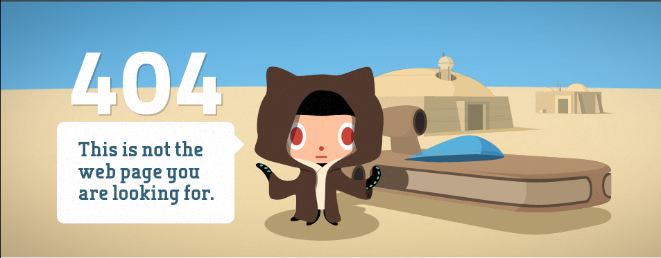

Chapitre 1: Les aires urbaines, nouvelles géographie d'une France mondialisée

=> Quels rôles les aires urbaines jouent-elles dans l'organisation d'un territoire français de plus en plus mondialisé ?
I. Étude de cas: l'aire urbaine de Lyon
A. Localisation
2024-sept-20-3 pour le schema


B. Les mobilités, un phénomène au cœur de l'aire urbaine

Pôle d'échanges multimodal
Lieu ou se connecte différents réseaux de transports.
| Nombre de voyageurs par an | 30 millions |
|---|---|
| Nombre de déplacements quotidiens | 500 000 |
| Nombres de trains par jour | 550 trains |
| Nombre d'usagers de la gare par jour (aujourd'hui) | 125 000 |
| Nombre d'usagers de la gare par jour (prévisions 2030) | 175 000 |
| Nombre d'usagers des transports en commun à la Part Dieu chaque jour (aujourd'hui) | 170 000 |
| Nombre d'usagers des transports en commun à la Part Dieu chaque jour (2030) | 300 000 |
| Dates de la première phase de réaménagement du pôle de la Part-Dieu | 2017-2023 |
Objectifs:
- Répondre à la fréquentation croissante de la gare
- Mieux accueillir les usagers
- Améliorer la qualité de service ferroviaire
- Ouvrir la gare sur le quartier de la Part-Dieu
- Améliorer les connexions entre les différents modes de transport
Moyens de transport connectés au pôle:
- Taxi
- Car
- Bus
- Métro
- Voiture
- Vélo
- Tram
Exemples d'aménagements construits ou repensés:
- Nouvelle tour de bureaux et hôtels
- Création d'une galerie
- Création d'une douzième voie
- Parking à vélo
- Nouvel accès au métro
- Nouveaux accès au quais
- Place végétalisée
- Pôle de transports en commun repensés
Avec plus de 2.6 millions d'habitants, Lyon est la 2e aire urbaine de France. Elle est composée de 514 communes entre lesquelles les habitants effectuent de nombreux déplacements. Ces mobilités concernent donc les différentes parties de l'aire urbaine. les aménagements de transport doivent s"adapter à cette hausse des mobilités.
Mobilités
Déplacements pour le travail, les loisirs et les achats.
L'aire urbaine de lyon
Ville-Centre (1)
Balieue (2)
Couronne périurbaine (3)
+= Pôle Urbain + = aire urbaine
Les amènagements de transport:
Principaux axes de communication (autoroutes, voies ferrées...)


| Zones | Caractéristiques |
|---|---|
| Ville centre | Espace le plus anciennement et le plus densément urbanisé - Habitat dense (nombreux immeubles anciens et récents) - Monuments historiques - Transports en commun - Nombreuses activités de commerces, de services, de loisirs - quartier d'affaire, centre de décision |
| Banlieue | Habitat: - soit des immeubles avec de grands ensembles - soit des pavillons, des lotissements. - grandes surfaces, entreprises= beaucoup d'espace |
| Couronne périurbaine | Espace qui "mélange" ville est campagne - lottissements, zones pavillonaires, petits immeubles - villages - commerces et services de proximité |
L'aire urbaine de Lyon, comme la majorité des aires urbaines françaises, a connu une forte croissance de sa population ces dernières années qui s'observe surtout dans la couronne périurbaine. Cette croissance urbaine s'accompagne d'un étalement spatial de la ville: on parle de périurbanisation (= extension de la ville dans les campagnes proches). Cette périurbanisation entraine ausii l'augmentation des mobilités.
Les dynamiques spatiales
Migration pendulaires = déplacements quotidiens domicile/travail
Etalement urbain
Plus forte hausse de poplation
- augmentation des distances
- voitures
- pas de transports en commun
mindmap
root ("Étalement urbain (périurbanisation")
Causes
Augmentation de la vitesse des déplacements car: ___ - Amélioration des réseaux de transport ________________ - Développement de l#39;automobile
Baisse des couts des transports
Recherche d#39;un environnement plus naturel
Coût du logement moins élevé quand on s#39;éloigne du centre ville
Conséquences
Utilisation intensive de l#39;automobile émettrice de gaz à effet de serre
Disparition des zones agricoles périurbaines
Accroissement des distances parcourues pour les trajets quotidiensD. Lyon, une métropole internationale attractive

- è
- Deux autres activités présentent dans la métropole lyonaise sont la médecine et les médias
- l'avion, la voiture, le train
- Pour douvler la surface du centre-ville
- Plus de voyageurs, d'entreprises et d'étudiants